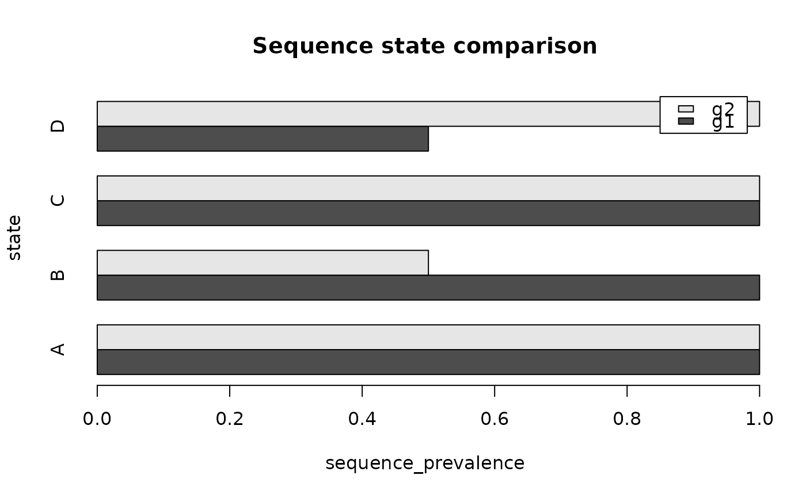

Plot a descriptive sequence-group comparison
Source:R/sequence-consensus-groups.R
plot_sequence_group_comparison.RdPlot a descriptive sequence-group comparison
Usage
plot_sequence_group_comparison(
comparison,
component = c("state", "transition", "length"),
measure = NULL,
top_n = 12L,
main = NULL,
xlab = NULL,
ylab = NULL,
...
)Arguments
- comparison
A result from
compare_sequence_groups().- component
"state","transition", or"length".- measure
Measure to display. Defaults depend on
component.- top_n
Maximum states or transitions to display.
- main, xlab, ylab
Plot labels.
- ...
Additional base-graphics arguments.
Examples
sequences <- data.frame(
sequence_id = rep(c("s1", "s2", "s3", "s4"), each = 4L),
sequence_order = rep(1:4, times = 4L),
state = c("A", "B", "C", "D", "A", "B", "C", "C",
"D", "C", "B", "A", "D", "C", "A", "A"),
group = rep(c("g1", "g2"), each = 8L),
stringsAsFactors = FALSE
)
comparison <- compare_sequence_groups(sequences, group_col = "group")
plot_sequence_group_comparison(comparison, component = "state")
